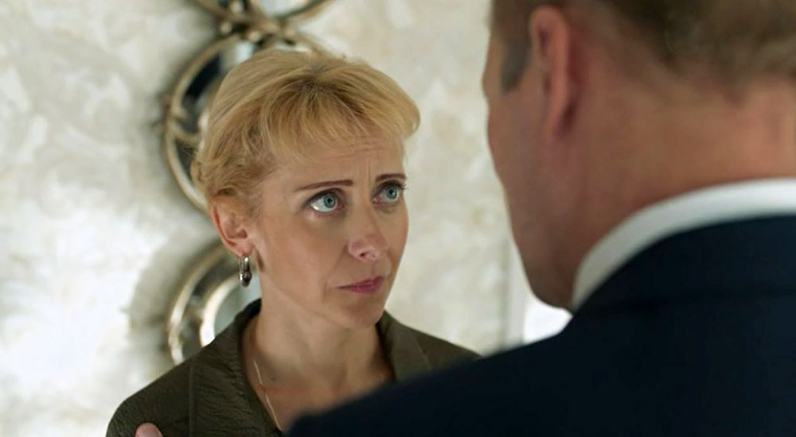
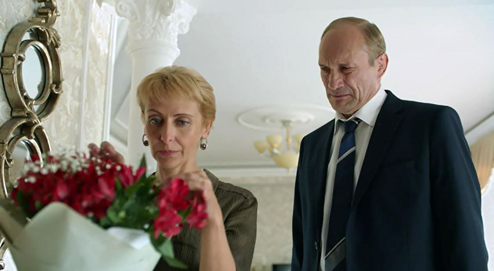
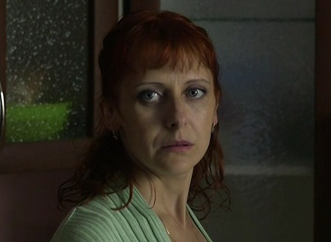

Биография
Слова словас
слова слова слова слова слова слова слова слова слова слова слова слова слова слова слова слова слова слова слова слова слова слова слова слова слова слова слова слова слова слова
Биография
слова слова слова слова слова слова слова слова слова слова слова слова слова слова слова слова слова слова слова слова слова слова слова слова слова слова слова слова слова слова
Фильмография
Подробнее на Кино-Театр.РУ



Сертификаты
Тест тееест! Театр!
слова слова слова слова слова слова слова слова слова слова слова слова слова слова слова слова слова слова слова слова слова слова слова слова слова слова слова слова слова слова
Репетиторство
Актриса театра и кино, опытный педагог и наставник Инна Борисовна Тарада приглашает на индивидуальные занятия по подготовке к поступлению в театральные вузы страны.
За моими плечами — 30-летний стаж служения искусству на сцене Тульского академического театра драмы и более 20 лет педагогической практики. Я помогаю талантливым юношам и девушкам не просто подготовиться к экзаменам, а поверить в себя и обрести свой голос.
Моя задача — не просто «натаскать» абитуриента, а раскрыть его индивидуальность.
Важный принцип моей работы — честность. Я всегда открыта к диалогу, но сразу предупреждаю: профессия актёра требует определённых природных данных и огромного труда. Если на первой встрече (или в процессе личного диалога) я понимаю, что у абитуриента есть серьёзные, неисправимые ограничения для сцены, я прямо говорю об этом. Я не берусь за работу с теми, кому сцена противопоказана, чтобы не тратить ваше время и деньги впустую и не давать ложных надежд.
Я не просто педагог. На период поступления я становлюсь для своих учеников надёжным наставником, который ведёт их ЗА РУКУ. Стрессы и комплексы мы оставляем за дверью. Я на связи 24/7, чтобы поддержать, подбодрить и помочь принять верное решение. В результате — 99.9% моих учеников поступают туда, куда мечтали.
«Инна Борисовна приложила невероятное количество усилий, чтобы я смогла подготовить программу и показать её на достойном уровне! Теперь я студентка Ярославского государственного театрального института. Спасибо Вам большое!»
«Мы продуктивно занимались всего год, но этого хватило, чтобы исполнить мечту всей моей жизни. 26 августа 2025 года я ПОСТУПИЛА в "Институт театральных искусств им. Народного артиста СССР И.Д. Кобзона". Мою благодарность Вам просто нельзя передать словами!»
«С первого дня нашего знакомства и до последней минуты кропотливой работы Вы не переставали меня поддерживать. Именно Вы подобрали подходящую чтецкую программу, именно вы научили выражать СВОИ чувства и СВОИ эмоции через слова автора».
Открывайте своё сердце искусству. Я помогу вам сделать первый шаг!